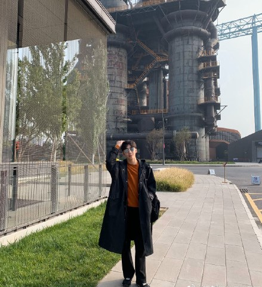
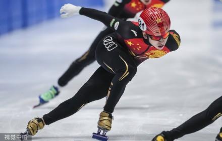
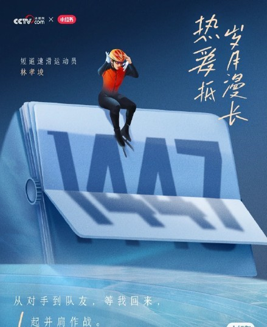

table {
table-layout: fixed;
border-collapse: collapse;
border-spacing: 0px;
林孝埈
林孝埈于1996年5月29日在韩国大邱出生。起初，他的父母想让他成为一名游泳运动员，
但由于他在玩棉棒时弄伤了鼓膜，接受手术后不得不放弃游泳运动，
并在小学二年级的时候选择转项目，开始练习短道速滑。
重要事件
- 林孝埈从中学开始遭遇不幸。他在初中一年级时右脚胫骨骨折，这是他第一次受重伤，一年半时间里他无法穿上冰鞋，然而他并没有放弃，离开家乡大邱来到首尔，和一位早就看好他实力的教练一起训练并从伤病中逐渐恢复。
- 高中时期林孝埈腰、脚踝、小腿、手腕、韧带等部位受伤。
- 2021年10月，林孝埈首次身穿中国国家队的队服公开亮相。根据相关政策，林孝埈需要距离
代表韩国参赛三年后，才能为其他国家出战，而林孝埈上次代表韩国参赛是在2019年，因此他并不满足参加北京冬奥会的条件。
运动生涯
- 2012年1月，林孝埈在初中三年级时代表国家青年队参加了第一届冬季青年奥林匹克运动会。
- 2017年4月9日，在2017-18赛季韩国短道速滑国家队选拔赛中。
- 2018年2月10日，在2018年平昌冬季奥运会短道速滑男子1500米A组决赛。
- 2019年2月2日，在2018-19赛季短道速滑世界杯德国德累斯顿站的比赛。
- 2021年10月，林孝埈首次身穿中国国家队的队服公开亮相。根据相关政策，林孝埈需要距离代表韩国参赛三年后，才能为其他国家出战，而林孝埈上次代表韩国参赛是在2019年，因此他并不满足参加北京冬奥会的条件。
- 2022年1月10日，在2022北京冬奥会短道速滑选拔赛B组决赛中，林孝埈获得男子500米和1500米第二名 。
获奖记录
| 获奖时间 |
奖项名称 |
| 2019-3 |
2019年短道速滑世锦赛男子1000米金牌 |
| 2019-3 |
2019年短道速滑世锦赛男子1500米金牌 |
| 2019-3 |
2019年短道速滑世锦赛男子超级3000米金牌 |
| 2018-3 |
2018年短道速滑世锦赛男子1000米银牌 |
| 2018-3 |
2018年短道速滑世锦赛男子1500米银牌 |
| 2018-2 |
第23届平昌冬奥会短道速滑男子1500米冠军 |
| 2018-2 |
第23届平昌冬奥会短道速滑男子500米季军 |
| 2012 |
2012冬季青年奥林匹克运动会1000米金牌 |
| 2012 |
2012冬季青年奥林匹克运动会500米银牌 |
生活照



社会评价
- 林孝埈擅长中长距离且接力比赛经验丰富。（环球网评）
- 尽管每每重要时间点他总是被致命的伤病缠身，一次次与成功遗憾擦肩而过，他也不曾放弃，像个真正的战士战斗。（网易体育评）
- 说实话这么多年，我们每次看到林孝埈，都感觉到像个奇迹一样。没有父母的支持和内心对于短道速滑的热爱，是根本坚持不到现在的，他确实也很值得学习。（中国队领队杨占宇评）